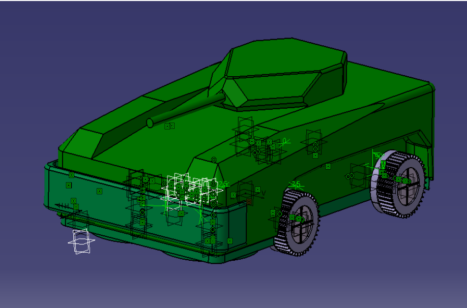
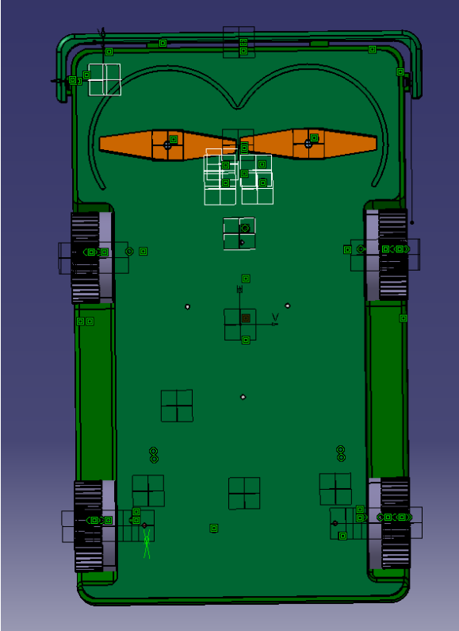
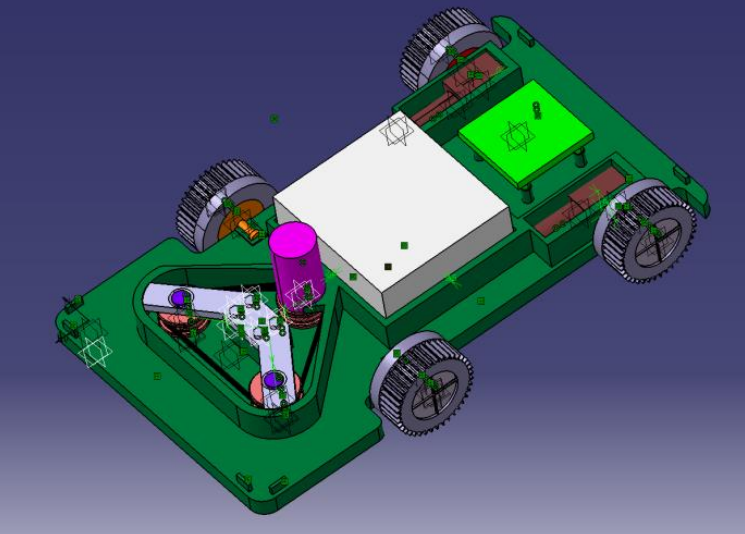
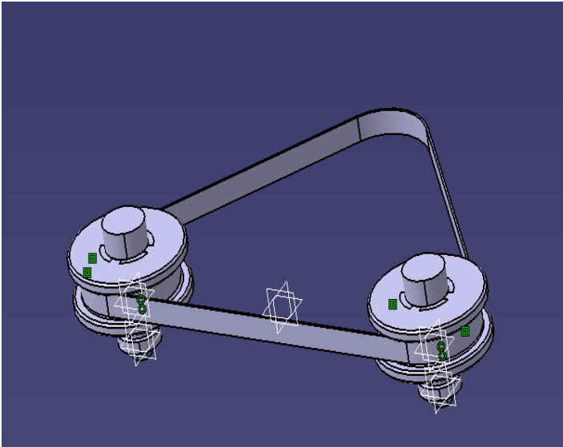
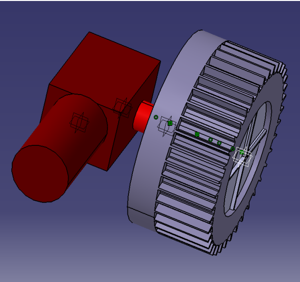

Description du Projet
Projet académique intense de 70 heures en équipe visant à concevoir un robot tondeuse autonome de la feuille blanche au prototype fonctionnel.
Missions & Compétences :
- Cahier des Charges : Définition des spécifications techniques.
- Management : Pilotage de l'équipe et respect des jalons temporels.
- CAO & Outils : Modélisation et dimensionnement sous SolidWorks et Matlab.
Compte-rendu du Projet (Rapport)
Galerie CAO du Robot




